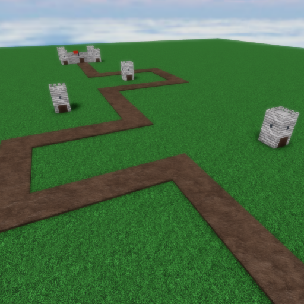

|  | |
| Length | 175 Studs (Medium) |
|---|---|
| Cliffs | 11 |
| Date Added | December 15th, 2022 |
| Built By | coreyhsGames |
Castle is a medium/short map with castles and many trees. The map has castle towers along its path that can have cliff towers on them. The map has multiple corners and sharp curves. This map is actually based off a old removed map from Tower Battles, Castle.
Castle is set in medieval ages with castles and castle towers on both sides of the map. The path/track is dirt.